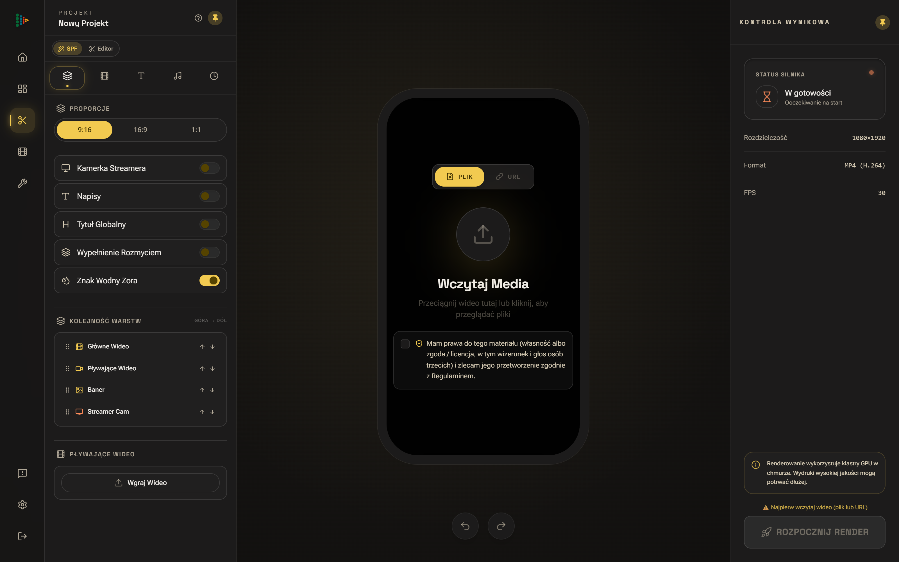
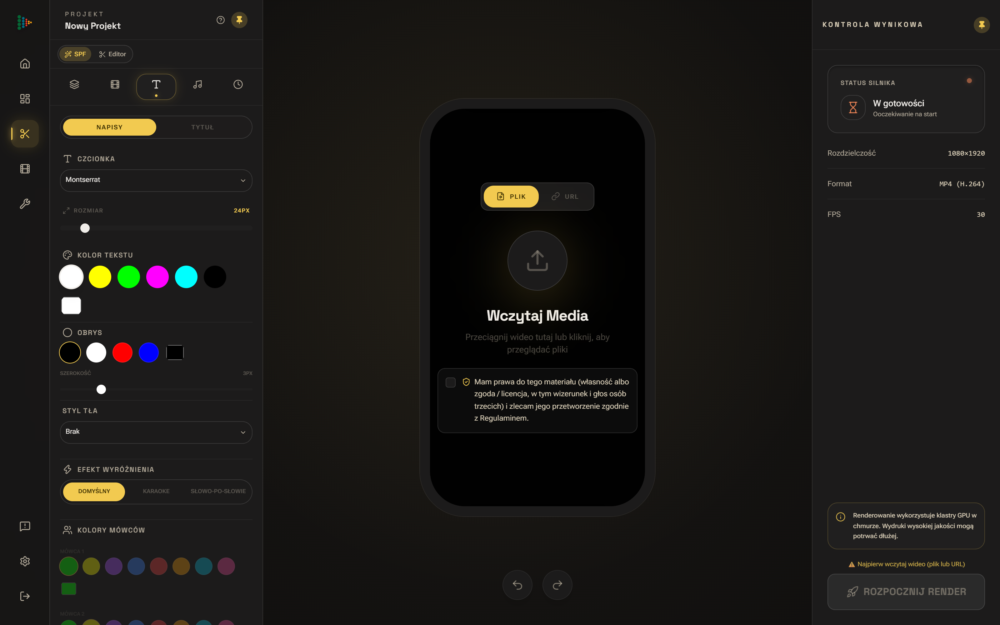

Rozszczepiamy surowy zapis na warstwy.
Zanim powstanie pierwsze cięcie, silnik oddziela głosy rozmówców, bada gęstość informacyjną zdań i odrzuca studyjny szum.
DETEKCJA: WIELOŚCIEŻKOWA
WEJŚCIE: DO 4K 60FPS
Od surowego strumienia studyjnego po pionowy kadr 9:16 — analizujemy rytm sporu, ruch mówcy i akustykę przestrzeni, wydobywając najmocniejsze momenty nagrania.
Zanim powstanie pierwsze cięcie, silnik oddziela głosy rozmówców, bada gęstość informacyjną zdań i odrzuca studyjny szum.
Model rozpoznaje momenty zwrotne argumentacji — buduje klip od intrygującego otwarcia aż po zamkniętą, czytelną puentę.
Wektorowe śledzenie twarzy prowadzi wirtualną kamerę za aktywnym mówcą lub dzieli ekran na dwie osoby podczas dynamicznej wymiany zdań.
Każda wyodrębniona sekwencja otrzymuje napisy zsynchronizowane co do sylaby oraz znormalizowany miks audio gotowy do publikacji.
Każda karta w poniższej talii prezentuje autentyczny materiał wygenerowany przez nasz silnik. Przewijaj, aby nakładać kolejne tablice ekspozycyjne, filtruj kategorie lub otwórz dowolną sekwencję w pełnoekranowym inspektorze.


Brak sekwencji odpowiadających wybranemu filtrowi.
Przesuń suwak długości nagrania i wybierz docelowe formaty obrazu, aby przeliczyć parametry potoku.
Precyzyjne znaczniki czasu dla każdej sylaby, uwzględniające polską fleksję i terminologię branżową.
Wykadrowanie pionu 1080×1920 z szerokiego planu 4K UHD zachowuje pełną ostrość bez rozmycia.
Równoległe przetwarzanie GPU skraca wielogodzinne przeglądanie surówki do trzech minut.
Każdy wyeksportowany plik spełnia wymogi głośności współczesnych platform wideo bez przesterowań.
Sprawdź, jak działają nasze modele selekcji narracyjnej, obsługa kodeków studyjnych oraz ochrona materiałów przed publikacją.
Przejdź do aplikacji zora-labs.comŁączymy analizę semantyczną transkrypcji z badaniem cech akustycznych głosu — zmian tempa, pauz retorycznych oraz energii wypowiedzi. Wyodrębniona sekwencja posiada wyraźne otwarcie, rozwinięcie i zamkniętą puentę.
System unika chaotycznego przeskakiwania kamery. Gdy dwóch gości wchodzi w szybką interakcję, kompozycja automatycznie przechodzi w dwudzielny układ pionowy (Split-Screen), utrzymując obie twarze w kadrze.
Tak. Każda wygenerowana propozycja otwiera się w przeglądarkowym stole montażowym Zora Studio, gdzie możesz z dokładnością co do klatki przesunąć cięcie, poprawić tekst, zmienić krój pisma lub dodać własne ujęcia B-roll.
Obsługujemy pliki MP4, MOV oraz WebM (H.264, HEVC/H.265, Apple ProRes) w rozdzielczości do 4K 60 fps. Eksport dostarcza zoptymalizowane pliki MP4 (High Profile, AAC 320 kbps) oraz pliki napisów SRT i VTT.
Wspieramy twórców podcastów, redakcje publicystyczne, domy produkcyjne i zespoły komunikacji. Prześlij parametry swoich nagrań, a przygotujemy dedykowane środowisko testowe.